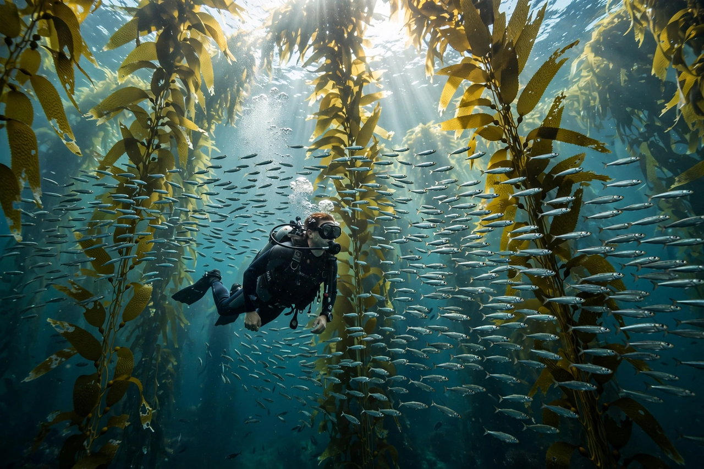

Kelp forest

Kelp forests are underwater ecosystems of dense, towering brown algae (kelps) that grow in cool, nutrient-rich coastal waters. Giant kelp can grow tens of centimetres per day and reach 30 metres or more, forming a three-dimensional habitat likened to a forest, with canopy, understorey and floor communities.
They occur along the Pacific coasts of North and South America, and around South Africa, Australia, New Zealand and sub-Antarctic islands.
Ecology
Kelp forests are among the most productive and dynamic ecosystems on Earth, sheltering fishes, abalone, lobsters, sea otters and thousands of other species. Sea urchins are pivotal grazers: where their predators (otters, large fish, lobsters) are removed, urchins can mow down the forest into barren ground; where predators thrive, the forest persists — a classic example of a trophic cascade demonstrated by sea otter recovery on the North Pacific coast.
Kelp also absorbs carbon and nutrients, buffers coasts, and has long been harvested for alginates, food and fertiliser; kelp aquaculture is expanding.
Threats
Marine heatwaves linked to Climate change have devastated kelp forests in California, Tasmania and elsewhere, especially where warming also boosts urchin survival or removes predators; pollution and sedimentation add pressure. Restoration projects reseed kelp and control urchins at trial scales. See Ecosystem and Biodiversity.
See also: Ecosystem · Biodiversity · Coral reef · Ocean · Climate change